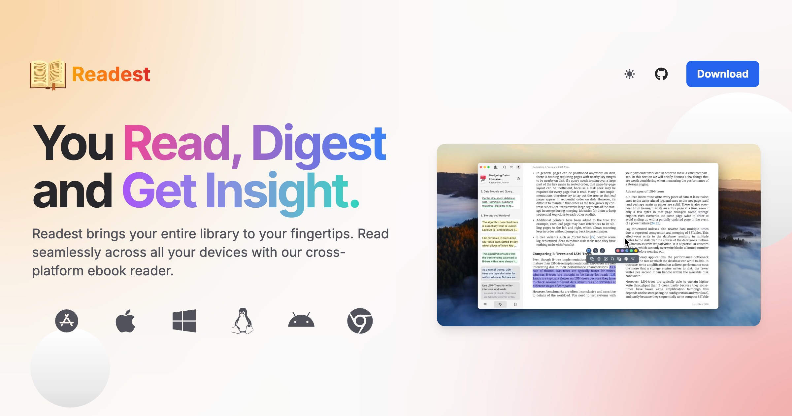
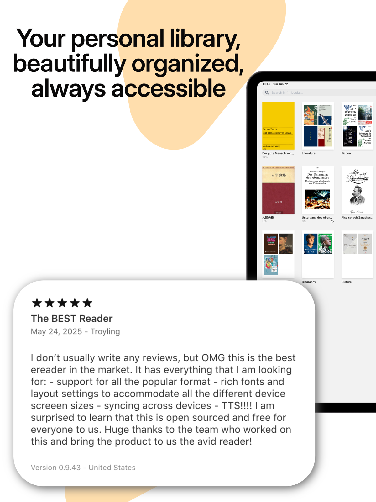

别再折腾多平台阅读器了——Readest 用一周，我的书库终于有了归宿
从 Android 手机到 iPad 再到 Mac，跨平台阅读器总逃不开进度不同步、标注丢失的魔咒。这次试试 Readest，一周下来那些让我头疼了好几年的问题居然真的解决了。
我手机里存着通勤看的悬疑小说，iPad 上放着啃了三个月的技术大部头，Mac 桌面堆着各种 PDF 和 EPUB——这套设备组合用了好几年，但每次想换个阅读器同步标注和进度，都是一场噩梦。
之前试过的东西不少：Apple Books 在 Android 上根本没有，Kindle App 的个人文档同步慢得像在等快递，KOReader 倒是够用但界面实在太硬核，Calibre 推书一套流程下来能把阅读心情全耗光。直到有人给我推了这个Readest官网，我抱着「再试一个」的心态装了。
初印象：装起来挺快，界面干净得不像这年头的软件
我直接去下载页拿了桌面版安装包，双击安装完打开，第一眼有点懵——左侧书架、中间书籍卡片、右侧空白详情栏，没有弹窗、没有引导、没有任何让我点「下一步」的东西。说实话，这种极简开场反而让我有点不习惯，像是走进一家没有服务员的书店，安静得让你不好意思打扰。
手机上装 Android 版也是同样的路数：打开就是书架界面，所有设置藏在主菜单里，默认状态下甚至连个「欢迎使用」都没有。

界面配色默认暗主题，卡片圆角克制，书封没加载出来的地方用灰色占位不会让界面塌成一团。这种「不抢戏」的设计对我来说是加分项——阅读器嘛，主角应该是书，不是软件本身。
书架整理：终于不用再手动分文件夹了
书一多，平铺书架就是灾难。我之前 iPad 上堆了快两百本书，每次想找某本技术书都得划好久。Readest 这点让我眼前一亮。
书架顶栏能直接切换分组维度：按作者聚合、按系列自动归类，或者我自己建分组。我给「今年读完的」和「待读池」各建了一组，长按一本书就能批量归组，拖进去就行。排序键支持的维度也不少——书名、作者、最近阅读、加入日期、出版日期，甚至可以设二级排序：按作者分组后再按系列排，同一作者的丛书自然排成一列，找起来快多了。
还有个细节是元数据可以微调。有几本精校 EPUB 的书名和作者元数据填得乱，我选中直接改，改完读详情页里显示的是我改过的，但原文件不动——这对一堆从不同渠道来的书来说太实用了，我不想为了整理元数据去碰原始文件。

脚注和书签：专业书里终于不用来回翻页码了
这部分是我最惊喜的。之前看带大量脚注的技术书或学术书，点脚注链接会直接跳到页面底部，看完脚注再跳回正文，来回折腾几次阅读节奏全断了。Readest 的脚注是弹窗展开的——点一下，注释在一个浮窗里出来，正文位置完全不动。
而且那个弹窗不是死的。我选中注内的一段文字，照样能高亮、能复制、能查词。注里如果还有交叉引用，点它会跳到书中对应位置，目标处会短暂闪一下提醒我，不用手动翻。这个小细节解决了我好多年的痛点。
书签也简单，快捷键一按（桌面是 Ctrl+B，Mac 是 Cmd+B），页边出现一条丝带标记。侧栏书签列表里可以给每条命名——我给常看的技术书都标了「第三章框架」「关键算法那段」之类的名字，比靠页码靠谱多了。开了同步之后，换个设备打开，书签跟着进度一起在。
隐私和同步的那些小细节，说实话有点意外
我之前对跨平台阅读器的同步功能总有点戒心——进度、标注这些东西走云端，万一账号盗了或者服务跑路怎么办。Readest 在这点上做得挺实诚的。
PIN 锁是默认就有的选项，四位数字，手机上设了 PIN 之后还能用面容或指纹解锁。遥测默认是关的，想帮着改进的自己开，而且官方明说不收集个人信息、书籍内容和阅读行为。桌面版的安装包还配了 minisign 签名验证——虽然我不会专门去验，但知道有这个东西在，至少心理上踏实。
不过同步这块我也踩了一个坑。某天突然发现手机上的书架比 iPad 上多出来几本，查了半天才发现是 iPad 那边「书籍」同步类目被我上次调设置时不小心关了——Readest 的同步是按类目分开的，书籍、进度、标注各是各的开关，出问题得逐个核对。还有就是应用体积暴涨的问题：手机上读了快五十本书后应用占了好几个 G，这不是 bug，是 Readest 下载过的书默认不自动删，得手动去「仅从本机移除」逐本清理——云端那份不受影响，进度和标注都保留。这块同步和存储的细节挺多的，我是翻Readest文档才捋顺的，写得比设置菜单里那几行字清楚多了。
适合谁，不适合谁
说了这么多优点，也得说句实在的。Readest 不是完美的，它适合什么人也比较明确。
适合的：有一堆书、跨好几个设备、对同步和隐私有要求的读者。如果你像我一样在手机、平板、桌面之间来回切换，希望标注和进度老老实实跟着你走，Readest 值得试试。书架整理和脚注弹窗这两个功能，对啃专业书的人尤其友好。
不太适合的：主要用单一设备看书、对阅读器没太多额外要求的人，可能用 Apple Books 或 Kindle 就够了，没必要特意换。还有就是习惯看 PDF 为主的——Readest 支持 PDF，但核心体验还是围绕 EPUB 做的，PDF 党可能没那么多惊喜。
还有个小提醒：KOReader 官方服务器那条路线只同步进度，书签和笔记不同步是设计如此，想要全量同步得换插件路线，这点文档里有说明但第一次看到还是有点懵。
用了这一周，我之前分散在三个设备上的书终于都进了同一个书架，进度跑到哪都不用再手动对齐，标注攒得越来越多也不担心换设备就丢。说实话一开始装它我没抱太大期待——这年头敢说自己跨平台同步做好了的阅读器我见过不少，但真正用起来不折腾的，Readest 是第一个。
相关的仓库源码我在GitHub、Gitee和GitCode都做了同步，国内访问看 Gitee 会更顺一些，想翻源码或者补文档都方便。